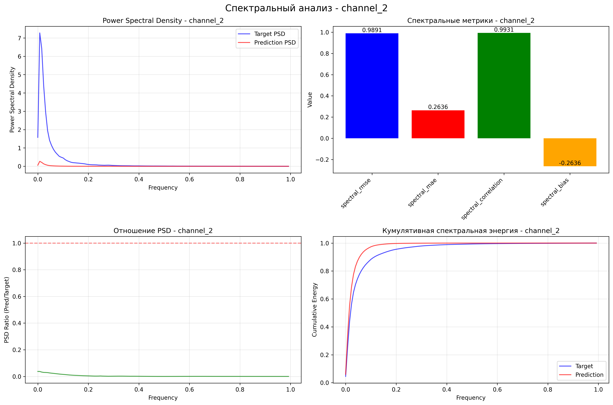
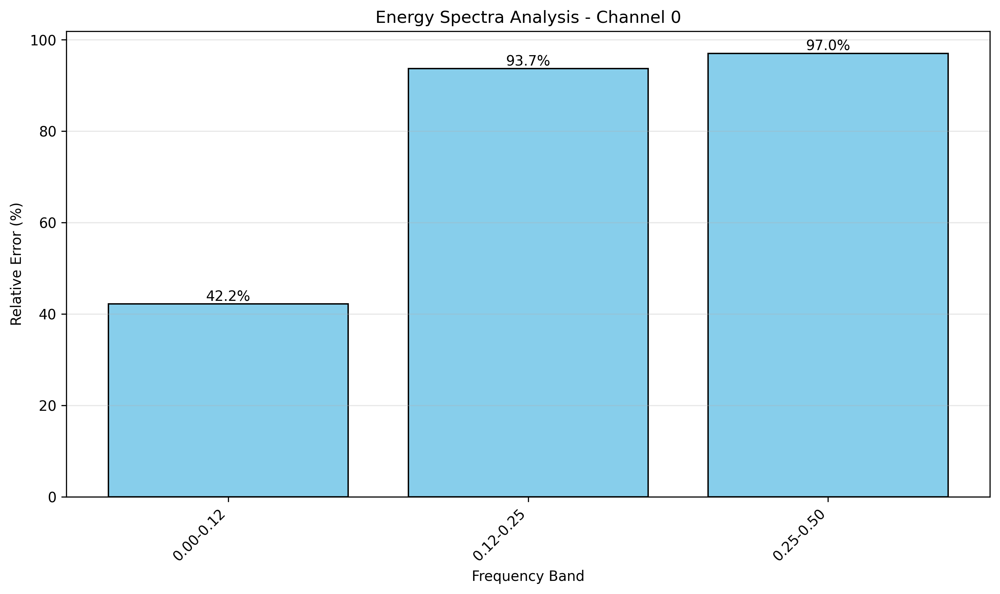
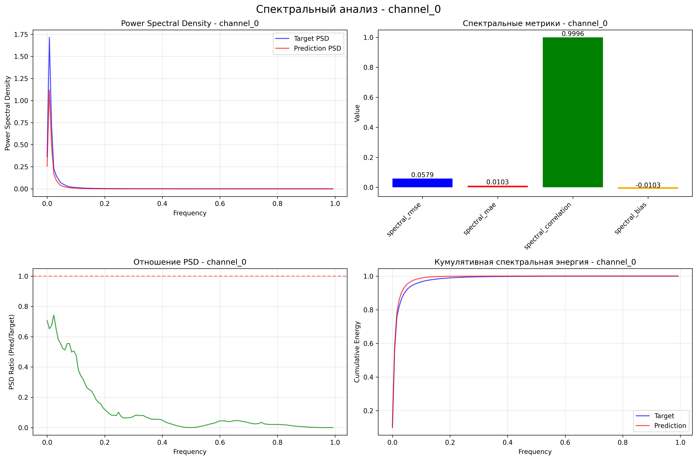
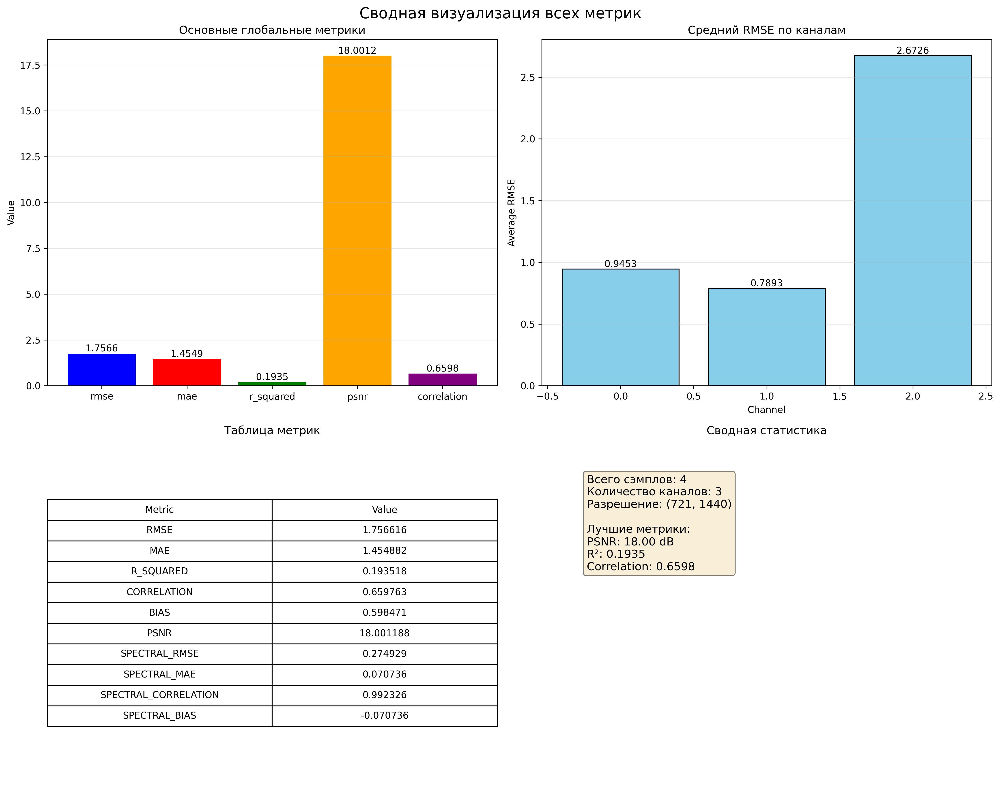
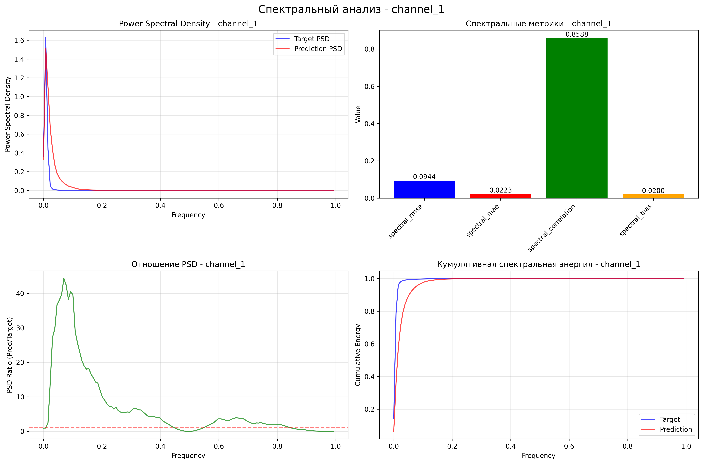

Comprehensive Downscaling Model Report
Generated on: 2025-12-07 13:32:34
Model: WeatherUNet
Device: cpu
Variables: ['T2M', '10u', '10v']
Executive Summary
Overall Performance:
- RMSE: 1.7566
- MAE: 1.4549
- R²: 0.1935
- PSNR: 18.00 dB
- Correlation: 0.6598
Detailed Metrics
Global Metrics
| Metric | Value | Interpretation |
|---|
| RMSE | 1.756616 | Меньше лучше |
| MAE | 1.454882 | Меньше лучше |
| R_SQUARED | 0.193518 | Плохое соответствие |
| CORRELATION | 0.659763 | Умеренная корреляция |
| BIAS | 0.598471 | |
| PSNR | 18.001188 | Плохое качество |
| SPECTRAL_RMSE | 0.274929 | |
| SPECTRAL_MAE | 0.070736 | |
| SPECTRAL_CORRELATION | 0.992326 | |
| SPECTRAL_BIAS | -0.070736 | |
| BAND_0_ENERGY_TRUE | 0.042185 | |
| BAND_0_ENERGY_PRED | 0.008693 | |
| BAND_0_RELATIVE_ERROR | 0.793934 | |
| BAND_1_ENERGY_TRUE | 0.000956 | |
| BAND_1_ENERGY_PRED | 0.000011 | |
| BAND_1_RELATIVE_ERROR | 0.988110 | |
| BAND_2_ENERGY_TRUE | 0.000284 | |
| BAND_2_ENERGY_PRED | 0.000001 | |
| BAND_2_RELATIVE_ERROR | 0.996628 | |
Channel-wise Statistics
channel_0
| Metric | Mean | Std | Min | Max |
|---|
| mse_map_mean | 1.374394 |
| mse_map_std | 2.102329 |
| mse_map_min | 0.000232 |
| mse_map_max | 12.244575 |
| rmse_map_mean | 0.945310 |
| rmse_map_std | 0.693384 |
| rmse_map_min | 0.015242 |
| rmse_map_max | 3.499225 |
| mae_map_mean | 0.929161 |
| mae_map_std | 0.697932 |
| mae_map_min | 0.010522 |
| mae_map_max | 3.490396 |
| bias_map_mean | -0.369832 |
| bias_map_std | 1.100665 |
| bias_map_min | -2.062442 |
| bias_map_max | 3.490396 |
channel_1
| Metric | Mean | Std | Min | Max |
|---|
| mse_map_mean | 0.699801 |
| mse_map_std | 0.430324 |
| mse_map_min | 0.000050 |
| mse_map_max | 9.137759 |
| rmse_map_mean | 0.789337 |
| rmse_map_std | 0.277035 |
| rmse_map_min | 0.007043 |
| rmse_map_max | 3.022873 |
| mae_map_mean | 0.771783 |
| mae_map_std | 0.283200 |
| mae_map_min | 0.006097 |
| mae_map_max | 2.779340 |
| bias_map_mean | -0.492838 |
| bias_map_std | 0.656058 |
| bias_map_min | -2.779340 |
| bias_map_max | 1.331793 |
channel_2
| Metric | Mean | Std | Min | Max |
|---|
| mse_map_mean | 7.182903 |
| mse_map_std | 1.053000 |
| mse_map_min | 0.460754 |
| mse_map_max | 44.139663 |
| rmse_map_mean | 2.672589 |
| rmse_map_std | 0.200422 |
| rmse_map_min | 0.678789 |
| rmse_map_max | 6.643769 |
| mae_map_mean | 2.663705 |
| mae_map_std | 0.212681 |
| mae_map_min | 0.458369 |
| mae_map_max | 4.860687 |
| bias_map_mean | 2.658084 |
| bias_map_std | 0.235612 |
| bias_map_min | -3.145083 |
| bias_map_max | 2.997704 |
Spectral Metrics
channel_0
| Metric | Value |
|---|
| spectral_rmse | 0.057896 |
| spectral_mae | 0.010254 |
| spectral_correlation | 0.999590 |
| spectral_bias | -0.010254 |
channel_1
| Metric | Value |
|---|
| spectral_rmse | 0.094368 |
| spectral_mae | 0.022347 |
| spectral_correlation | 0.858782 |
| spectral_bias | 0.020027 |
channel_2
| Metric | Value |
|---|
| spectral_rmse | 0.989121 |
| spectral_mae | 0.263636 |
| spectral_correlation | 0.993139 |
| spectral_bias | -0.263636 |
Visualizations

channel_2_spectral_analysis

energy_spectra_channel_0

channel_0_spectral_analysis

summary_visualization

channel_1_spectral_analysis
Files Generated
- predictions.npy (47.53 MB)
- channel_2_spectral_analysis.png (0.37 MB)
- energy_spectra_channel_0.png (0.10 MB)
- channel_0_spectral_analysis.png (0.40 MB)
- summary_visualization.png (0.37 MB)
- T2M_spatial_metrics.png (2.12 MB)
- all_metrics.json (0.00 MB)
- channel_1_spectral_analysis.png (0.40 MB)
- targets.npy (47.53 MB)
- 10u_spatial_metrics.png (1.84 MB)
- 10v_spatial_metrics.png (2.29 MB)